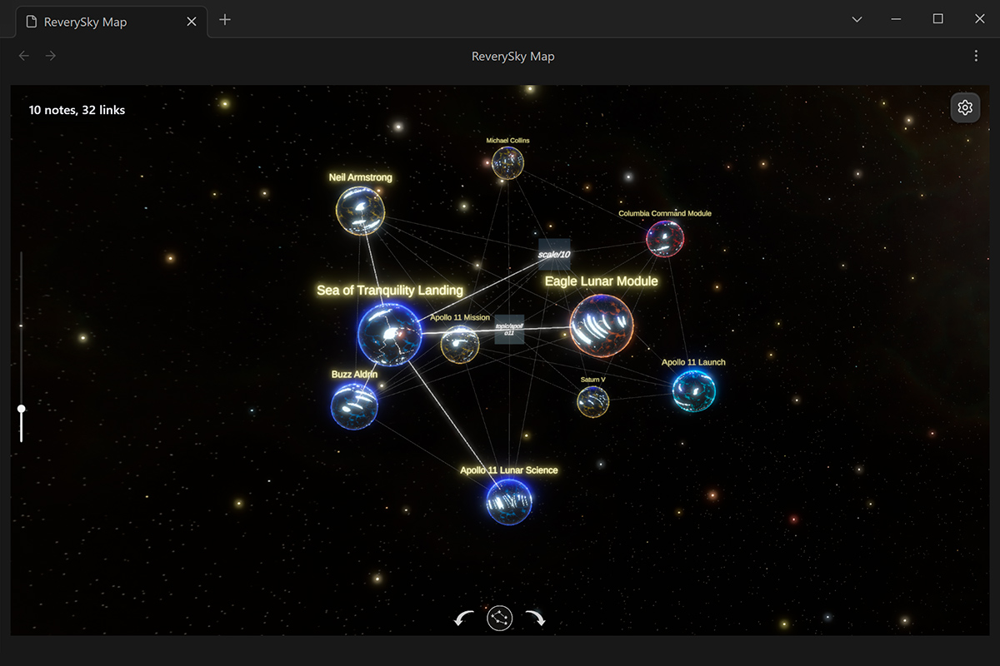

Visual maps for Markdown data
ReverySky turns linked notes, tags, dates, and metadata into a spatial map that can be read as a structure, not only as a list of files.
Interactive information spaces
ReverySky turns connected personal information into interactive 3D spaces. Notes, relationships, time, and recurring patterns become part of a navigable visual structure.

ReverySky 3D Graph visualizing 2,000 connected notes.

Obsidian desktop plugin
An Obsidian plugin that represents a vault as a connected universe. Move between notes and their visual nodes, filter the graph, change its layout, and inspect either the full vault or a focused neighborhood.

Android visual journal
A visual journal in which recorded dreams become a personal map. Entries are connected through time and shared themes, making recurring images and patterns easier to revisit.
Core idea
ReverySky turns linked notes, tags, dates, and metadata into a spatial map that can be read as a structure, not only as a list of files.
The graph is meant to be moved through, focused, filtered, revisited, and extended as the underlying notes grow.
Connections, chronology, scale, and restrained progression mechanics help reveal meaning without replacing the underlying data.
Development
ReverySky is created and maintained by MoonSkorch Studio. Support contributes to continued development, testing, visual work, and distribution.